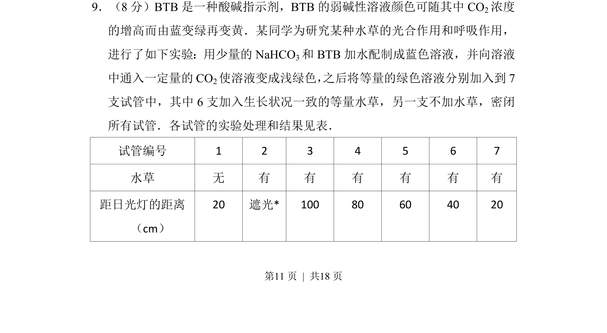
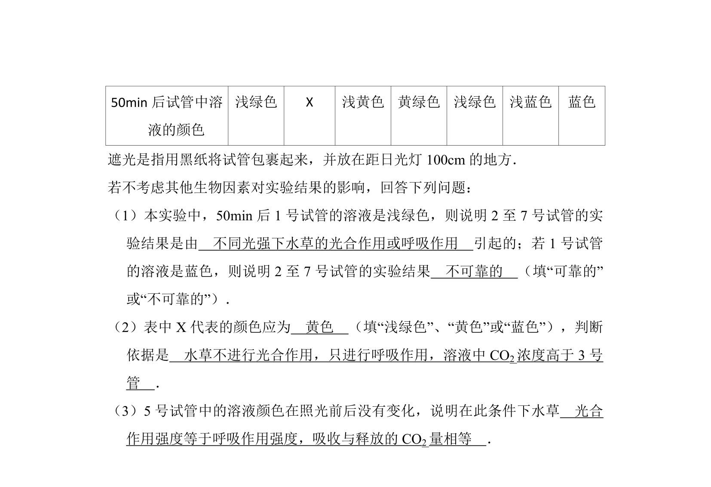
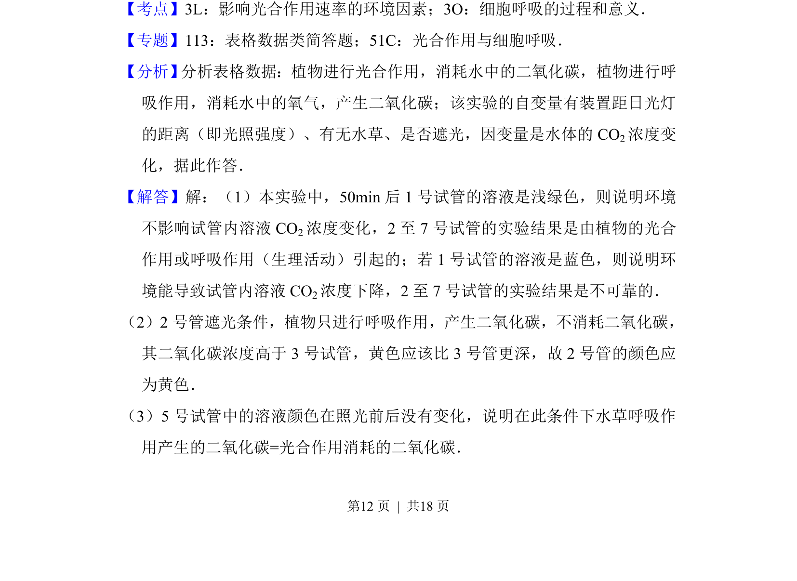
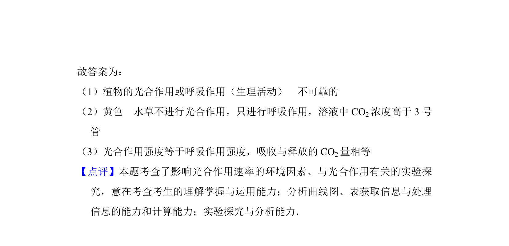

考点：光合作用 呼吸作用 CO2浓度 光照强度


考题通过BTB颜色变化研究水草在不同光照条件下光合与呼吸作用的关系


📄 原 PDF 第 11 页：
素材/真题/吉林/2008-2024·（吉林）生物高考真题/2016年高考生物试卷（新课标Ⅱ）（解析卷）.pdf
9．（8分）BTB是一种酸碱指示剂，BTB的弱碱性溶液颜色可随其中CO 2浓度 的增高而由蓝变绿再变黄．某同学为研究某种水草的光合作用和呼吸作用， 进行了如下实验：用少量的NaHCO 3和BTB加水配制成蓝色溶液，并向溶液 中通入一定量的CO 2使溶液变成浅绿色， 之后将等量的绿色溶液分别加入到7 支试管中，其中6支加入生长状况一致的等量水草，另一支不加水草，密闭 所有试管．各试管的实验处理和结果见表． 试管编号 1 2 3 4 5 6 7 水草 无 有 有 有 有 有 有 距日光灯的距离 （cm） 20 遮光* 100 80 60 40 20